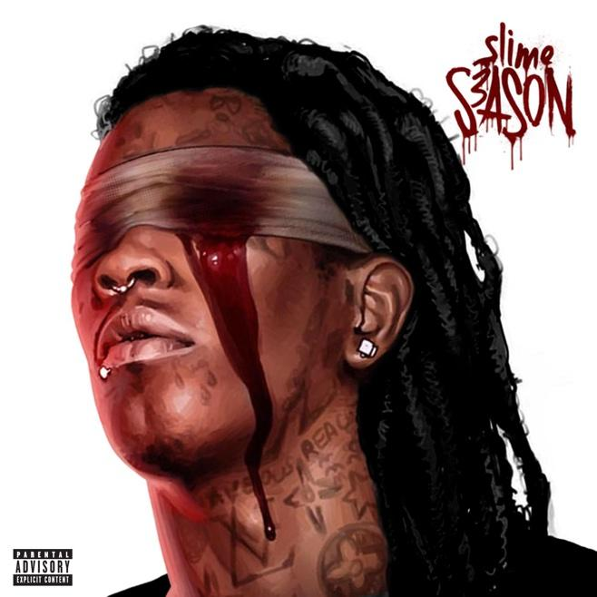
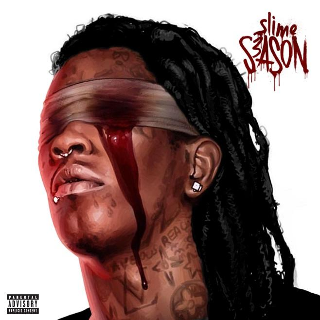

ы Главная | Статистика
WE DON'T TRUST YOU by Future & Metro Boomin
«We Don't Trust You» – это совместный рэп-альбом Future и Metro Boomin, выпущенный 22 марта 2024 года, который стал первой частью дилогии из двух альбомов, выпущенных с интервалом в несколько недель. Альбом вызвал широкий резонанс и спровоцировал масштабную драму в рэп-индустрии.
HEROES & VILLAINS by Metro Boomin
«Heroes & Villains» — это концептуальный альбом американского рэп-продюсера Metro Boomin, выпущенный 2 декабря 2022 года, который исследует темы добра и зла через психоделический трэп. Альбом получил широкое признание критиков и дебютировал на первом месте в чарте Billboard 200.
Monster by Future
«Monster» — это тринадцатый микстейп американского рэпера Future, выпущенный 28 октября 2014 года лейблом Freebandz Entertainment. Микстейп считается частью «трилогии микстейпов альбомного качества», наряду с «Beast Mode» и «56 Nights», выпущенных Future после его второго студийного альбома Honest. Исполнительным продюсером микстейпа выступил Metro Boomin.
Slime Season 3 by Young Thug
«Slime Season 3» — это третий коммерческий микстейп американского рэпера Young Thug. Он был выпущен 25 марта 2016 года лейблами 300 Entertainment и Atlantic Records. Микстейп является третьей частью серии Slime Season.